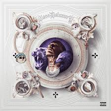

YOGURCITO

Uno de sus temas más virales, que cuenta con un remix popular.
Escuchar/Ver VideoEl artista central y líder que reunió a todos los talentos en el proyecto 'Los Extraditablessd'.

Blessd, cuyo nombre real es Stiven Mesa Londoño, es una de las figuras más importantes de la nueva ola del reguetón y trap colombiano. Nacido en Medellín, ha conquistado la escena global con su estilo callejero y letras sinceras, consolidándose como "El Bendito".
Su trayectoria está marcada por éxitos virales y colaboraciones con gigantes como Maluma, Myke Towers y J Balvin. 'Los Extraditablessd' es una muestra de su compromiso con impulsar nuevos talentos del género.
Uno de sus temas más virales, que cuenta con un remix popular.
Escuchar/Ver VideoSencillo clave en su ascenso, lanzado junto a Ovy On The Drums.
Escuchar/Ver Video
Track que destaca su versatilidad y capacidad para generar hits.
Escuchar/Ver Video
Uno de sus temas más románticos o melódicos con gran recepción.
Escuchar/Ver Video